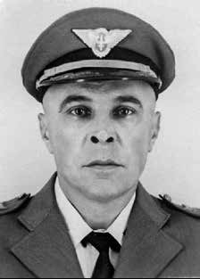

Alfeu
de Alcântara
Monteiro
CIRCUNSTÂNCIAS DA MORTE
Alfeu de Alcântara Monteiro morreu no dia 4 de abril de 1964, em Porto Alegre, no Rio Grande do Sul, após ser executado a tiros pelo oficial da Aeronáutica Roberto Hipólito da Costa, dentro de seu próprio gabinete, por recusar-se a apoiar o golpe militar que derrubara o então presidente da República João Goulart. Alfeu, então tenente-coronel, foi o primeiro militar morto em decorrência da repressão aos opositores após o golpe. A versão divulgada pelos órgãos de repressão é a de que ele foi morto com um único tiro, resultante de legítima defesa do major-brigadeiro Nelson Lavanère Wanderley, após Alfeu tê-lo ferido com dois tiros, quando lhe fora dada ordem de prisão, por não aceitar o novo comando. Segundo o Dossiê dos Mortos e Desaparecidos Políticos do Comitê Brasileiro pela Anistia, Seção Rio Grande do Sul, Alfeu foi morto pelas costas por uma rajada de metralhadora, tendo sido encontrados 16 projéteis em seu corpo. A certidão de óbito registra como local da morte o Hospital de Pronto Socorro de Porto Alegre, ocasionada por “hemorragia interna consecutiva” aos “ferimentos de vísceras abdominais”. De acordo com o auto de necropsia, Alfeu foi ferido a tiros e faleceu horas depois no hospital; e ainda constata que sua morte foi ocasionada por ferimentos por projéteis de arma de fogo, que atingiram o corpo de Alfeu de forma oblíqua, da frente para trás, da direita para a esquerda e paralela ao eixo transversal do corpo, o que indica que os disparos foram feitos fora do seu campo de visão, totalizando 16 orifícios, o que indica o número dos projéteis que penetraram o seu corpo. No entanto, segundo informação apresentada em relatório pelo Ministério da Aeronáutica ao Deputado Federal Nimário Miranda, presidente da Comissão de Representação Externa da Câmara, em 1993, Alfeu faleceu “no interior do QG do V COMAR”. Depoimentos de oficiais que estavam presentes no quartel naquele momento noticiam que o coronel-aviador Roberto Hipólito da Costa abriu a porta do gabinete, onde estavam o major-brigadeiro Nelson Lavanère Wanderley e o tenente-coronel Alfeu, e o alvejou pelas costas. Com base nesses relatos e na perícia, a família ingressou com um processo incriminando o coronel-aviador como principal responsável e autor dos disparos. Roberto Hipólito da Costa, que foi considerado inocente após a conclusão do processo, era sobrinho do Marechal Humberto de Alencar Castello Branco. No processo movido contra ele, o acusador denuncia a falta de um exame pericial na arma utilizada naquele momento. Neste processo, configurou-se, inicialmente, como encarregado do Inquérito Policial Militar (IPM) que investigaria os fatos, o brigadeiro Nelson Lavanère Wanderley, pois fora nomeado ministro da Aeronáutica, no dia 20 de abril de 1964. Por sua ligação com os fatos, retirou-se da função de encarregado do IPM, assumido pelo tenente brigadeiro-do-ar João de Almeida, que concluiu pela tese de legítima defesa, “sem excessos”, do coronel Roberto Hipólito, mesmo tendo este dado 16 tiros em Alfeu. Analisando esse processo, é possível encontrar, ainda, outras contradições. Afirma-se que o coronel Alfeu foi chamado à 5ª Zona Aérea para ser informado de que deveria embarcar no dia seguinte para o Rio de Janeiro, com o objetivo de iniciar o curso da ECEMAR. Porém, Alfeu já havia sido desligado desde o dia 31 de março daquele comando, passando-o ao novo comandante sem nenhum incidente e já com a informação de que deveria ir ao Rio de Janeiro matricular-se no curso. E assim o fez, como consta na folha de alterações. O coronel Alfeu estava em período de trânsito e havia acabado de voltar do Rio de Janeiro, quando, no dia 4 de abril, recebeu uma convocação do comandante Nelson Wanderley para que comparecesse à 5ª Zona Aérea, com o objetivo de prendê-lo, como fez com todos os militares legalistas daquela zona aérea. Segundo depoimentos, após acalorada conversa com o comandante, negou-se a aceitar a ordem de prisão e retirou-se da sala, ao que o coronel-aviador tentou impedi-lo e acabou fuzilando-o pelas costas, momento em que Alfeu caiu ao chão, frontalmente. Somente após ter sido atingido, sua arma disparou acidentalmente e acertou dois tiros no comandante Nelson Lavanère Wanderley, o que se confirma pelo exame de balística mostrando que os tiros foram disparados de baixo para cima, ou seja, quando já estava caído ao chão. A certidão de óbito ratifica que a morte de Alfeu ocorreu no hospital. Por sua vez, o relatório da CEMDP confirma que o mesmo foi morto na 5ª Zona Aérea. Dois dias depois da morte de Alfeu, o Ministro da Aeronáutica, Brigadeiro Correia de Melo, distribuiu uma nota oficial à imprensa confirmando a morte do tenente-coronel, justificando os tiros que o mesmo recebeu pela negativa em transmitir o cargo ao novo comandante da 5ª Zona Aérea, o que, como afirmado anteriormente, pode ser contestado, já que Alfeu havia sido deposto do cargo no dia 31 de março. Alertou, ainda, a outros oficiais-generais, “a necessidade de desmontar, sem mais tardança, o esquema de subversão que fora armado pelo Poder Executivo deposto, a fim de assegurar a instabilidade das instituições nacionais”, inserindo, portanto, a morte de Alfeu nesse quadro de expurgo a ser realizado.
Alfeu de Alcântara Monteiro died on April 4, 1964, in Porto Alegre, Rio Grande do Sul, after being shot by Air Force officer Roberto Hipólito da Costa, inside his own office, for refusing to support the military coup that had overthrown the then President of the Republic João Goulart. Alfeu, then lieutenant colonel, was the first soldier killed as a result of the repression of opponents after the coup. The version released by the repression bodies is that he was killed with a single shot, resulting from self-defense by Major Brigadier Nelson Lavanère Wanderley, after Alfeu had wounded him with two shots, when he was given an arrest order, for not accepting the new command. According to the Dossier of Political Dead and Missing Persons of the Brazilian Committee for Amnesty, Rio Grande do Sul Section, Alfeu was killed in the back by a machine gun burst, with 16 projectiles found in his body. The death certificate records the place of death as the Hospital de Pronto Socorro de Porto Alegre, caused by “consecutive internal bleeding” and “abdominal viscera injuries”. According to the autopsy report, Alfeu was injured by gunshots and died hours later in the hospital; and also notes that his death was caused by injuries from firearm projectiles, which hit Alfeu's body obliquely, from front to back, from right to left and parallel to the transverse axis of the body, which indicates that the shots were fired outside his field of vision, totaling 16 holes, which indicates the number of projectiles that penetrated his body. However, according to information presented in a report by the Ministry of Aeronautics to Federal Deputy Nimário Miranda, president of the Chamber's External Representation Committee, in 1993, Alfeu died “inside the V COMAR HQ”. Testimonies from officers who were present in the barracks at that time reported that aviator colonel Roberto Hipólito da Costa opened the door to the office, where Major Brigadier Nelson Lavanère Wanderley and Lieutenant Colonel Alfeu were, and shot him in the back. Based on these reports and expertise, the family filed a lawsuit incriminating the aviator colonel as the main person responsible for and author of the shooting. Roberto Hipólito da Costa, who was found innocent after the conclusion of the process, was the nephew of Marshal Humberto de Alencar Castello Branco. In the case filed against him, the accuser denounces the lack of an expert examination of the weapon used at that time. In this process, Brigadier Nelson Lavanère Wanderley was initially in charge of the Military Police Inquiry (IPM) that would investigate the facts, as he had been appointed Minister of the Air Force on April 20, 1964. Due to his connection with the facts, he withdrew from his role as head of the IPM, taken over by Air Lieutenant Brigadier João de Almeida, who concluded with the thesis of self-defense, “without excesses”, by Colonel Roberto Hipólito, even though he fired 16 shots at Alfeu. Analyzing this process, it is possible to find other contradictions. It is stated that Colonel Alfeu was called to the 5th Air Zone to be informed that he had to embark the following day for Rio de Janeiro, with the aim of starting the ECEMAR course. However, Alfeu had already been dismissed from that command since March 31, passing him on to the new commander without any incident and with the information that he should go to Rio de Janeiro to enroll in the course. And he did so, as stated in the change sheet. Colonel Alfeu was in transit and had just returned from Rio de Janeiro, when, on April 4, he received a summons from commander Nelson Wanderley to appear at the 5th Air Zone, with the aim of arresting him, as he did with all the loyalist military personnel in that air zone. According to testimony, after a heated conversation with the commander, he refused to accept the arrest order and left the room, to which the colonel-aviator tried to stop him and ended up shooting him in the back, at which point Alfeu fell to the ground, frontally. Only after he was hit, his weapon accidentally fired and landed two shots on commander Nelson Lavanère Wanderley, which is confirmed by the ballistics examination showing that the shots were fired from below, that is, when he was already lying on the ground. The death certificate confirms that Alfeu's death occurred in the hospital. In turn, the CEMDP report confirms that he was killed in the 5th Air Zone. Two days after Alfeu's death, the Minister of Aeronautics, Brigadier Correia de Melo, distributed an official note to the press confirming the lieutenant colonel's death, justifying the shots he received for his refusal to hand over the position to the new commander of the 5th Air Zone, which, as previously stated, can be contested, since Alfeu had been deposed from office on March 31st. He also warned other general officers, “of the need to dismantle, without further delay, the subversion scheme that had been set up by the deposed Executive Branch, in order to ensure the instability of national institutions”, therefore inserting Alfeu's death in this context of purge to be carried out.
Alfeu de Alcântara Monteiro murió el 4 de abril de 1964, en Porto Alegre, Rio Grande do Sul, tras ser baleado por el oficial de la Fuerza Aérea Roberto Hipólito da Costa, dentro de su propia oficina, por negarse a apoyar el golpe militar que derrocó al entonces Presidente de la República João Goulart. Alfeu, entonces teniente coronel, fue el primer militar asesinado como consecuencia de la represión de los opositores tras el golpe. La versión difundida por los órganos de represión es que fue asesinado de un solo disparo, en legítima defensa, por el mayor brigadier Nelson Lavanère Wanderley, luego de que Alfeu lo hiriera de dos tiros, cuando le dictaban orden de aprehensión, por no aceptar el nuevo mando. Según el Dossier de Muertos y Desaparecidos Políticos del Comité Brasileño de Amnistía, Seccional Rio Grande do Sul, Alfeu fue asesinado por la espalda por una ráfaga de ametralladora, encontrándose 16 proyectiles en su cuerpo. El certificado de defunción registra como lugar del fallecimiento el Hospital de Pronto Socorro de Porto Alegre, provocado por “hemorragias internas consecutivas” y “lesiones de vísceras abdominales”. Según el informe de la autopsia, Alfeu resultó herido de bala y murió horas después en el hospital; y también señala que su muerte fue provocada por heridas por proyectiles de arma de fuego, que impactaron el cuerpo de Alfeu de manera oblicua, de adelante hacia atrás, de derecha a izquierda y paralelo al eje transversal del cuerpo, lo que indica que los disparos fueron realizados fuera de su campo de visión, totalizando 16 agujeros, lo que indica la cantidad de proyectiles que penetraron su cuerpo. Sin embargo, según información presentada en un informe del Ministerio de Aeronáutica al diputado federal Nimário Miranda, presidente de la Comisión de Representación Externa de la Cámara, en 1993, Alfeu murió “dentro de la sede de la V COMAR”. Testimonios de oficiales que se encontraban en el cuartel en ese momento informaron que el coronel aviador Roberto Hipólito da Costa abrió la puerta de la oficina, donde se encontraban el mayor brigadier Nelson Lavanère Wanderley y el teniente coronel Alfeu, y le disparó por la espalda. Con base en estos informes y pericias, la familia presentó una demanda incriminando al coronel aviador como principal responsable y autor del tiroteo. Roberto Hipólito da Costa, declarado inocente tras la conclusión del proceso, era sobrino del mariscal Humberto de Alencar Castello Branco. En la causa presentada en su contra, la acusadora denuncia la falta de peritaje del arma utilizada en ese momento. En este proceso, el brigadier Nelson Lavanère Wanderley estuvo inicialmente a cargo de la Investigación de la Policía Militar (IPM) que investigaría los hechos, ya que había sido nombrado ministro de la Fuerza Aérea el 20 de abril de 1964. Por su vinculación con los hechos, se retiró de su cargo de jefe del IPM, asumido por el teniente de brigada aérea João de Almeida, quien concluyó con la tesis de la autodefensa, “sin excesos”, por El coronel Roberto Hipólito, a pesar de que le disparó 16 tiros a Alfeu. Analizando este proceso, es posible encontrar otras contradicciones. Se precisa que el coronel Alfeu fue llamado a la V Zona Aérea para ser informado que debía embarcar al día siguiente rumbo a Río de Janeiro, con el objetivo de iniciar el curso ECEMAR. Sin embargo, Alfeu ya había sido destituido de ese mando desde el 31 de marzo, pasándolo al nuevo comandante sin ningún incidente y con la información de que debía ir a Río de Janeiro a inscribirse en el curso. Y así lo hizo, tal y como consta en la hoja de cambio. El coronel Alfeu se encontraba en tránsito y acababa de regresar de Río de Janeiro, cuando, el 4 de abril, recibió una citación del comandante Nelson Wanderley para presentarse en la V Zona Aérea, con el objetivo de arrestarlo, como hizo con todos los militares leales en esa zona aérea. Según el testimonio, tras una acalorada conversación con el comandante, éste se negó a aceptar la orden de detención y abandonó la habitación, a lo que el coronel-aviador intentó detenerle y acabó disparándole por la espalda, momento en el que Alfeu cayó al suelo, de frente. Sólo después de ser alcanzado, su arma disparó accidentalmente y asestó dos tiros al comandante Nelson Lavanère Wanderley, lo que confirma el examen de balística que demuestra que los disparos se realizaron desde abajo, es decir, cuando ya estaba tendido en el suelo. El certificado de defunción confirma que la muerte de Alfeu se produjo en el hospital. A su vez, el informe del CEMDP confirma que fue asesinado en la Quinta Zona Aérea. Dos días después de la muerte de Alfeu, el ministro de Aeronáutica, brigadier Correia de Melo, distribuyó a la prensa una nota oficial confirmando la muerte del teniente coronel, justificando los disparos recibidos por su negativa a entregar el cargo al nuevo comandante de la V Zona Aérea, lo que, como ya hemos dicho, puede ser impugnado, ya que Alfeu había sido destituido de su cargo el 31 de marzo. También advirtió a otros generales, “de la necesidad de desmantelar, sin más demora, el esquema de subversión que había sido puesto en marcha por el depuesto Poder Ejecutivo, con el fin de asegurar la inestabilidad de las instituciones nacionales”, insertando así la muerte de Alfeu en este contexto de purga a llevar a cabo.